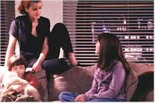
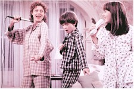

Contents | Features | Reviews | Books | Archives | Store |
 |
|
| Movie Credits | Buy It! |
Stepmom
Review by Gregory Avery
Posted 25 December 1998
| Directed by Chris Columbus. Starring
Julia Roberts, Susan Sarandon, Screenplay by Gigi Levangie, Jessie Nelson, |
In Stepmom, Julia Roberts plays Isabel, a professional New York City fashion photographer who can't get the two kids in her apartment out of bed and off to school in the morning on-time. The kids belong to Luke (Ed Harris), who left his wife to live with Isabel. Neither of the kids like Isabel, which only gives more cause for Luke's ex-wife, Jackie (Susan Sarandon), to treat Isabel with an everlasting amount of derision with scorn, pointing out how inadequate Isabel is as a mother while, secretly, harboring fears that she might lose her kids' affection towards her. The kids, in turn, treat Isabel contemptuously, often right to her face, leaving Isabel to have to contend with trying to assert some sort of parental authority while, at the same time, finding some way to get them all to live together convivially.
If the picture had stuck close to these ideas, it might just have had something going for it. But, no. Stepmom introduces, right at the 60-minute mark, some Big News about Sarandon's character, and thus thoroughly rooks whatever emotional response we might have to the movie from then on. (And the picture just manages to crawl over the 2-hour mark.) The director, Chris Columbus, is an absolute, perfectionist slave to formula, and always reaches for the easy and glib. He knows exactly what buttons in the audience to push, while at the same time making everything warm, comfortable, and utterly predictable. This is one movie where you can have a good cry without ever having to get really upset.
The story turns come in waves, at about 15-minute intervals: Isabel does something clumsy involving the kids. Jackie gets churlish towards her. Older daughter (Jena Malone) also shoots her mouth off at Isabel. Isabel tries to make amends. Isabel and older daughter begin the slow process of gradually moving towards bonding. Jackie does something clumsy involving the kids. Older daughter gets churlish towards her. Isabel tries to help Jackie make amends. Older daughter begins the slow process of gradually re-bonding with Jackie. Younger son (Liam Aiken), who seems to have been primped and presented for Maximum Impish Appeal, flies through the air in turkey outfit at the school Thanksgiving pageant. There's no problem that can't be fixed by everyone shaking themselves and getting-down to a recording of "Ain't No Mountain High Enough".
Thank heavens for Susan Sarandon. She provides her character with two things the film most definitely needs: an understanding of why Luke came to a point where he could no longer live with her (not only is Jackie super-organized, and often flinty in her observations, but she also gave up her career to devote herself full-time to raising her children); and empathy as to those particular feelings of hurt and recrimination that a character like hers must be experiencing. She and Roberts work well together, although Roberts tends to flash The Smile---that great, toothy grin of hers which immediately disarms people, sending arrows straight through their hearts---a lot during the early course of the picture, as if she were afraid of losing the audience's sympathy. Ed Harris has to deliver some incredible blather from the screenplay (which seems to have been written by-committee), such as when he tries to explain to one of his kids why he and their mother got divorced, saying something like, "When you get married, there are different sorts of feelings flying around. And those feelings change." Otherwise, he does about as good a job as he can under the circumstances. (Also, Isabel's photo agency boss is played, in a deft turn, by Darrell Larson, a superb performer going back to when he appeared in Mike's Murder in 1984, and who should be in a LOT more movies.)
If you have recollections of the climatic Christmastime weepfest at the end of Since You Went Away", wait 'till you see the one that caps this movie. I suspect, in fact, that with time it will come to be regarded as nothing short of high camp. It's just dying to be parodied. In the meantime, though, judging from the increasingly profuse amount of snufflings I heard at the screening I attended, the nation's theaters will be awash in Kleenex for many weeks to come. Sound the alarm bells and shore-up the barricades, because the magnum weepie of the year has arrived.
Contents | Features | Reviews | Books | Archives | Store
Copyright © 1999 by Nitrate Productions, Inc. All Rights Reserved.